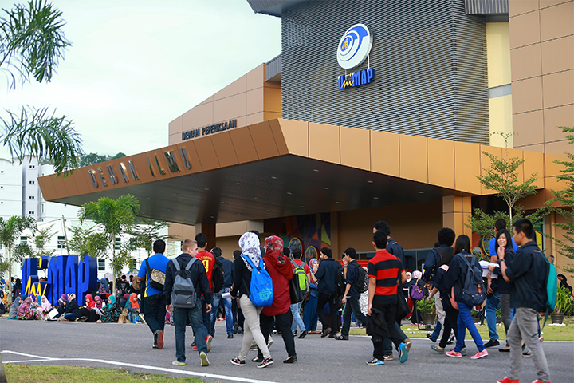
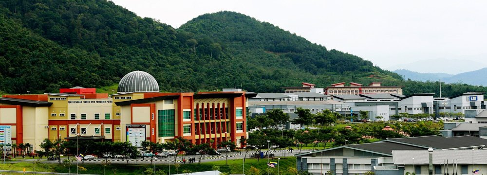
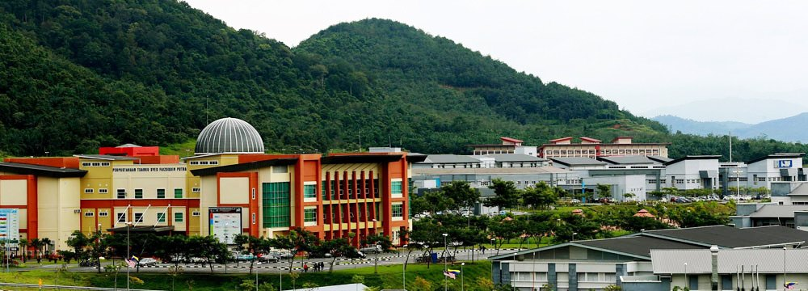
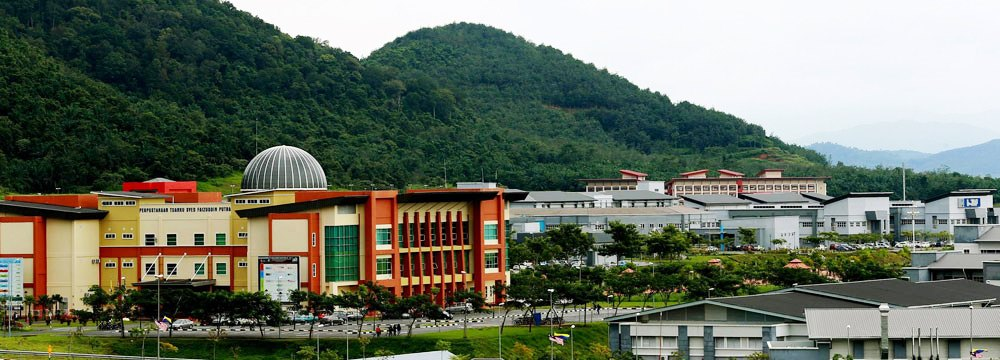
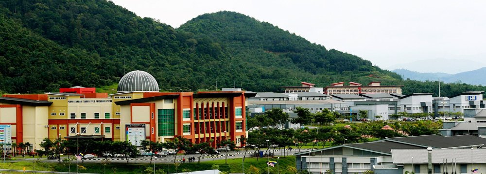

 





Jabatan Hal Ehwal Pelajar (JHEP) terletak di kampus induk Pauh Putra UniMAP. Fungsi utama JHEP adalah memantau semua aktiviti yang dianjurkan oleh badan pelajar, serta menyediakan perkhidmatan fizikal, kebajikan kewangan atau khidmat nasihat kepada pelajar yang tinggal dalam persekitaran kampus yang kondusif. Pegawai JHEP menguruskan kebajikan, latihan dan bimbingan pelajar dengan harapan dapat meningkatkan prestasi dan perkembangan individu.
Pelbagai pendekatan telah diambil dan beberapa perubahan dalam sistem pentadbiran dan pengurusan telah dilakukan bagi memberikan perkhidmatan yang terbaik dan cekap kepada semua pelajar. Sebahagian daripadanya adalah tugas JHEP untuk melahirkan graduan yang berpendidikan tinggi dan bersopan santun. Mengiktiraf potensi penuh mereka bersama-sama membangunkan graduan yang seimbang dari segi intelek, rohani, akhlak dan jasmani. JHEP mempunyai beberapa unit yang mengendalikan pelbagai aktiviti dan perkhidmatan secara berterusan untuk perkhidmatan bersih secara berterusan bagi memberikan perkhidmatan terbaik kepada pelajar
Kembali Ke Atas